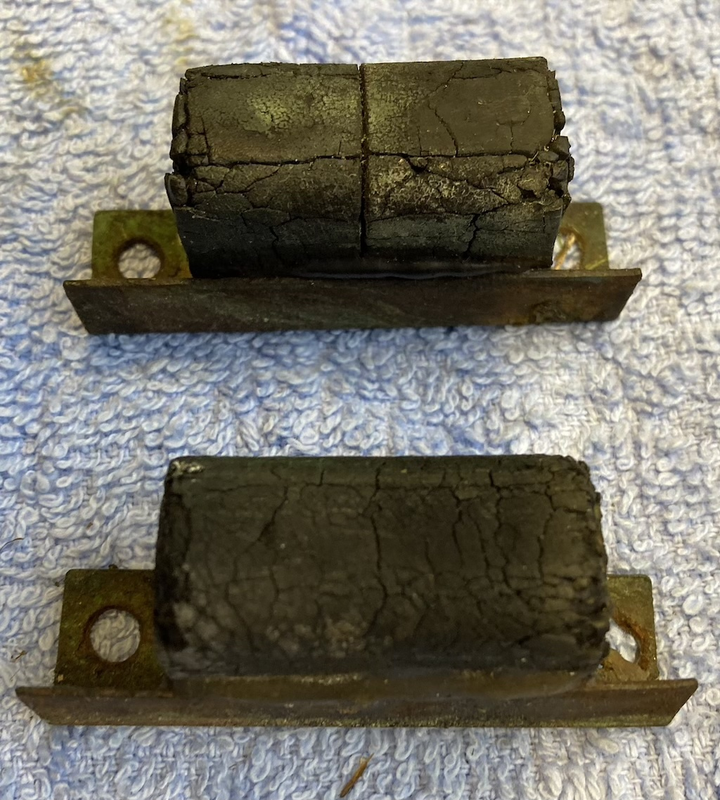
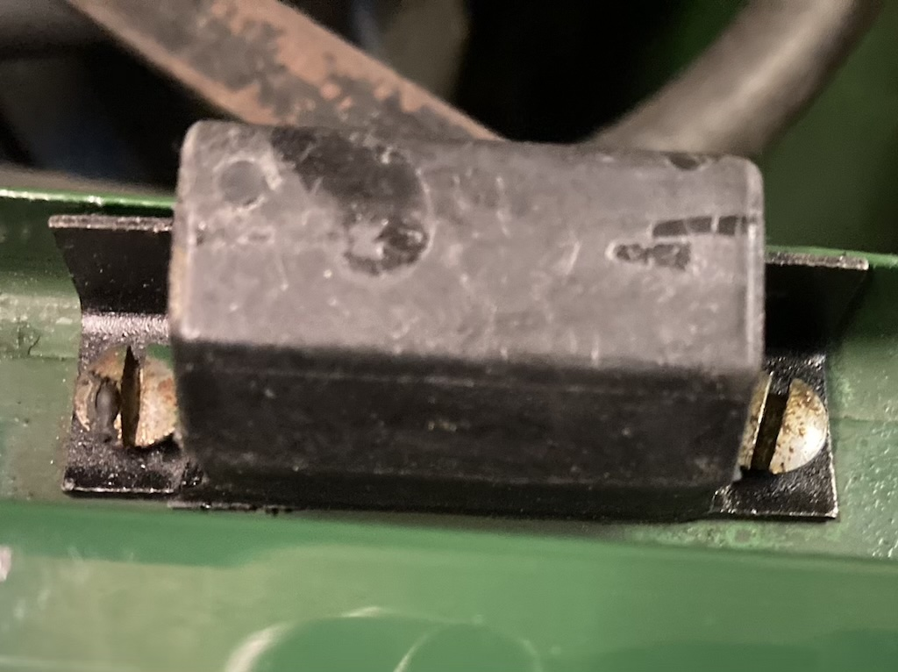

On any classic car there are always a number of small jobs that need to be done. DKK 416K is no exception. This page records these minor jobs.
Bonnet Rubbers
When I first bought DKK 416K I knew that the under-bonnet area was a bit grubby and the paint around the brake and clutch master cylinders had been removed, probably by spilt hydraulic fluid. The rubber seals around the bonnet were in good condition. However, the rubber 'stops', as can be seen in the photo, were hard and cracked.
This looked like a simple small job that could be done quickly, so I ordered new rubbers from the MG Owners Club.
Each block was held in place by two self-tapping screws, which were easy to remove. It was similarly easy to fit the two new blocks, although the holes in the near-side block did not quite line up with the holes in the wing. So I had to elongate the holes in the new block. The photo shows one on the new blocks in place.